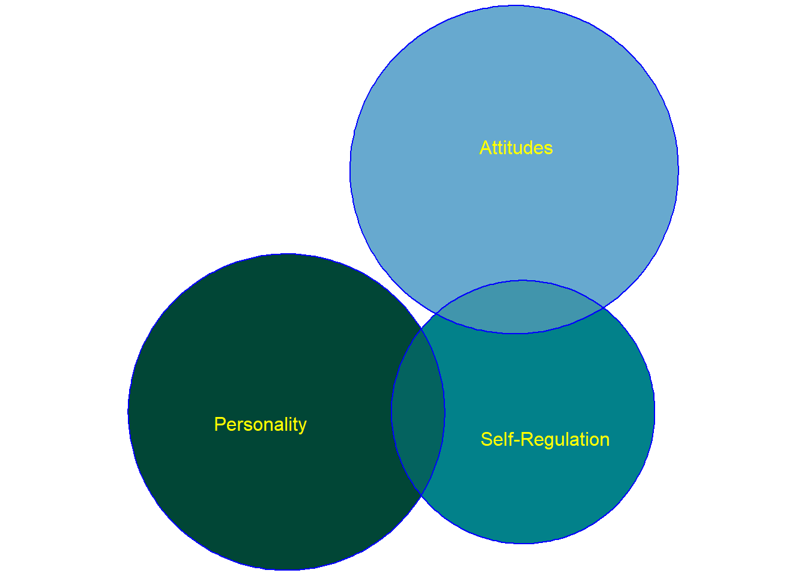
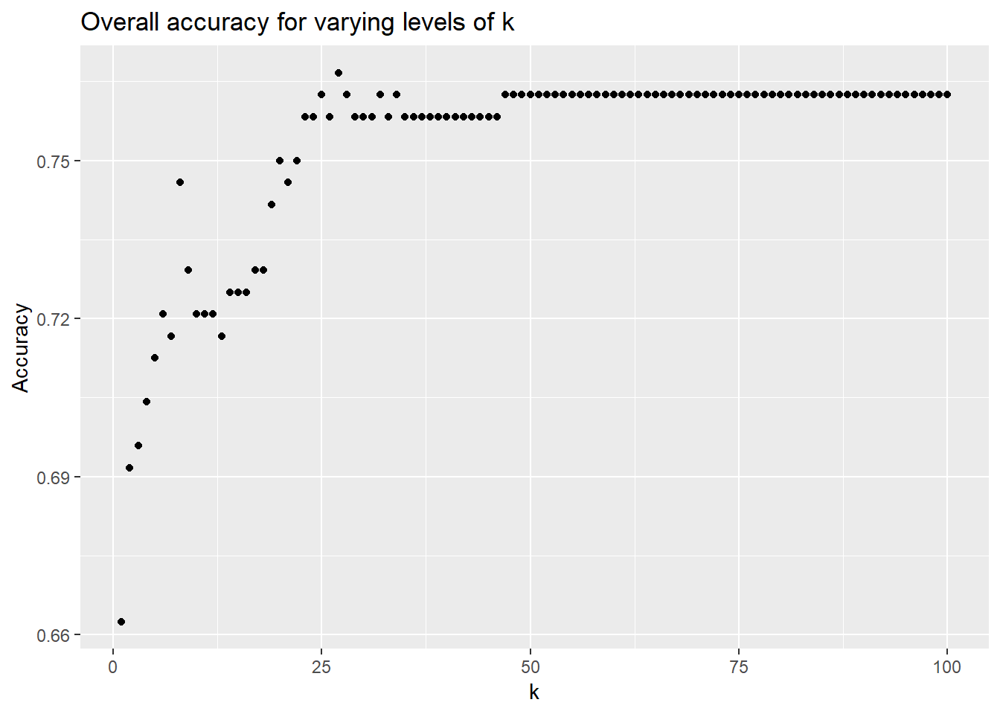

10 Literate programming with R markdown
A note from chapter 4 (coding basics): use assignment (x < - 3+4) rather than x = 3 + 4 because it is more clear.
Showing your work - for you as well as others - is another part of reproducible science. R Markdown documents allow you to include comments, scripts, and results in a single place.
We begin R4DS 6 (Workflow: Scripts, p. 110) which shows the R studio interface and encourages you to save your work using scripts.
You will save your work in projects - which isolate your work, setup files, etc., into different directories. (See r4ds, chapter 8). To reinforce the idea that your unit of analysis in R is “the project” rather than “the script”, consider associating your Rmd filetype with your markdown editor, and only your Rproj filetype with R studio.
The R markdown language is discussed in R4ds, Chapter 27 (p. 505).
10.1 A challenge
Working with two of your classmates, write an R markdown document titled “The most dangerous equation?” which (a) in the introduction, discusses Wainer (2007b), (b) then illustrates regression to the mean and (c) deMoivre’s equation, ideally (d) using the examples of ‘punishment’ and ‘sex differences in variability’ discussed in class and the text, respectively.
Prepare a presentation using Rpres which summarizes your argument and findings. Present this in class on 2/26.
(One starting point: the aforementioned r markdown document discussing basic laws of probability at Harvard’s datasciencelabs repository: https://github.com/datasciencelabs/2017/blob/master/lectures/prob/discrete-probability.Rmd.
10.2 r markdown
Goals and functions
- one goal is making your work clear to others, and to a later you
Parts
- YAML header: Some output formats
- Text formatted in markdown
- R code (chunks) surrounded by code fences
- (occasionally, inline code)
See Rmd cheatsheet (on Slack)
10.3 univariate data
kable and other approaches to generating output
exercise 27.4.7 2 (https://raw.githubusercontent.com/hadley/r4ds/master/rmarkdown/diamond-sizes.Rmd)
10.4 Homework due Feb 14 (with a solution).
10.4.1 “Diamond sizes” (27.4.7 - #2)
This is from Hadley’s book, with an initial shot at the code from Reilly.
“Download diamond-sizes.Rmd from https://github.com/hadley/r4ds/tree/master/rmarkdown. Add a section that describes the largest 20 diamonds, including a table that displays their most important attributes”
We copied the text of this into the present file, saving it as an ‘r markdown’ file.
10.4.2 Downloaded file block 1
- What does this block do?
This block loads needed libraries, then takes the diamond dataset and creates a smaller one which includes only diamonds <= 2.5 carats.
library(ggplot2)
library(dplyr)
smaller <- diamonds %>%
filter(carat <= 2.5)10.4.3 Downloaded text block
- This section illustrates inline code.
We have data about 53940 diamonds. Only 126 are larger than 2.5 carats. The distribution of the remainder is shown below:
- This block makes a chart, with bins of .01, showing the frequency of different size diamonds
smaller %>%
ggplot(aes(carat)) +
geom_freqpoly(binwidth = 0.01)
10.4.4 My revised graph
- Change 1 or more parameters of this graph to make it more useful. Describe your changes here
I re-binned the x axis and labeled modal values
smaller %>%
ggplot(aes(carat)) +
geom_freqpoly(binwidth = .125) +
scale_x_continuous(
breaks = c(0, .375, .75, 1, 1.25, 1.5, 2, 3))
10.4.5 Syntax for table (kable)
In class, Lanning showed how to use kable to generate a nicer looking table, of just the first five rows (observations) and columns (variables or attributes).
smallest <- smaller [1:5,1:5]
# smallest # this would generate an ugly table - remove the first hashtag if you don't believe me
# str(diamonds)
knitr::kable(smallest,
caption = "Five rows and columns of the diamonds frame."
)| carat | cut | color | clarity | depth |
|---|---|---|---|---|
| 0.23 | Ideal | E | SI2 | 61.5 |
| 0.21 | Premium | E | SI1 | 59.8 |
| 0.23 | Good | E | VS1 | 56.9 |
| 0.29 | Premium | I | VS2 | 62.4 |
| 0.31 | Good | J | SI2 | 63.3 |
10.4.6 The assignment …
The assignment is to ‘Add a section that describes the largest 20 diamonds, including a table that displays their most important attributes’
One way to do this is - (a) sort the file by size [Google ‘sort r data frame by a variable.’], - (b) save this sorted file with just the 20 largest diamonds [see the code block above for an example], and, - (c) choose the most important variables [you’ll have to make a judgement call here, then use the above]; then make a new table.
- Insert your code here
attach(smaller)
rankedDiamonds<-smaller[order(-carat),]
rankedDiamonds<-rankedDiamonds[1:20,c(1:4,7)]
knitr::kable(rankedDiamonds,
caption = "20 largest diamonds, select columns")| carat | cut | color | clarity | price |
|---|---|---|---|---|
| 2.50 | Fair | G | I1 | 7854 |
| 2.50 | Premium | H | I1 | 8467 |
| 2.50 | Fair | G | I1 | 8711 |
| 2.50 | Premium | H | SI2 | 12071 |
| 2.50 | Fair | H | SI2 | 13278 |
| 2.50 | Fair | H | SI2 | 13278 |
| 2.50 | Fair | G | SI2 | 14194 |
| 2.50 | Ideal | J | SI2 | 14502 |
| 2.50 | Fair | J | SI2 | 14652 |
| 2.50 | Ideal | J | SI2 | 15246 |
| 2.50 | Premium | H | SI2 | 15934 |
| 2.50 | Ideal | J | SI2 | 15990 |
| 2.50 | Ideal | I | VS2 | 16955 |
| 2.50 | Very Good | J | SI1 | 17028 |
| 2.50 | Fair | F | SI2 | 17405 |
| 2.50 | Good | J | VS2 | 18325 |
| 2.50 | Premium | I | SI2 | 18447 |
| 2.49 | Fair | J | I1 | 6289 |
| 2.49 | Ideal | J | SI1 | 16915 |
| 2.49 | Premium | I | SI2 | 18325 |
10.4.7 If at first you don’t succeed
How hard did you try?
- Document that you tried for at least 30 minutes, where you looked, and what you learned in your struggles
10.4.8 If you get this far
Now rewrite your code in as few lines as possible. (I do NOT mean omitting comments. Which of the above steps is necessary to answer the assignment?)
Here’s one answer - using ‘arrange’ instead of order…
knitr::kable(arrange(smaller,-carat)[1:20,c(1:4,7)])| carat | cut | color | clarity | price |
|---|---|---|---|---|
| 2.50 | Fair | G | I1 | 7854 |
| 2.50 | Premium | H | I1 | 8467 |
| 2.50 | Fair | G | I1 | 8711 |
| 2.50 | Premium | H | SI2 | 12071 |
| 2.50 | Fair | H | SI2 | 13278 |
| 2.50 | Fair | H | SI2 | 13278 |
| 2.50 | Fair | G | SI2 | 14194 |
| 2.50 | Ideal | J | SI2 | 14502 |
| 2.50 | Fair | J | SI2 | 14652 |
| 2.50 | Ideal | J | SI2 | 15246 |
| 2.50 | Premium | H | SI2 | 15934 |
| 2.50 | Ideal | J | SI2 | 15990 |
| 2.50 | Ideal | I | VS2 | 16955 |
| 2.50 | Very Good | J | SI1 | 17028 |
| 2.50 | Fair | F | SI2 | 17405 |
| 2.50 | Good | J | VS2 | 18325 |
| 2.50 | Premium | I | SI2 | 18447 |
| 2.49 | Fair | J | I1 | 6289 |
| 2.49 | Ideal | J | SI1 | 16915 |
| 2.49 | Premium | I | SI2 | 18325 |
Finally, generate HTML, Word, and PDF versions of this document.
- Are these different output formats useful for you? explain <- replace this line with an answer
10.5 What to do when you are stuck
google. pay attention to your error messages
ask for help, make your questions clear and reproducible (see R4DS Chapter 1)
take a break, think outside the box and kludge something together if you have to
document your struggle and your cleverness for a future you
References
Wainer, Howard. 2007b. “The Most Dangerous Equation.” American Scientist 95 (3). Sigma XI-The Scientific Research Society: 249.